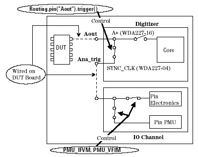

Setting up DC Connection for Analog Pin
To perform a DC test for a DUT pin that is wired to an analog I/O pin on the DUT board, set the analog module multiplexer setting so that the analog I/O pin is connected to the trigger input pin (SYNC_CLK pin) for DC test. You can use the ROUTING_STATUS API to set up multiplexer setting as shown below:
Routing.pin(pin).func;
Where, Routing is a system-prepared class object name of the ROUTING_STATUS API, and pin is an analog pin name, and func is a member function of the PIN_I class that is used as a subsidiary data container of the ROUTING_STATUS API.
To execute a particular task, you can specify any of the following member functions. For details of the member functions and the available analog modules, see PIN_I.
The task to be executed... |
Use this member function... |
|---|---|
Connect the analog pin to trigger input pin |
trigger() |
Disconnect the analog pin from trigger input pin |
disconnect() |
The figure below shows an example of multiplexer setting for DC test. After setting up the connection with the Routing.pin("Aout").trigger() statement, you can set up a DC test with the DC API (PMU_IFVM or PMU_VFIM). In this case, you must use the digital pin name ("Ana_trig") as a pin parameter of the DC API.

To download the multiplexer setting, put the FULSH API after the ROUTING_STATUS API as shown below:
Routing.pin("Aout").trigger();
FLUSH();
PMU_VFIM("Ana_trig").vForce(10 mV).settling(5 ms);
: